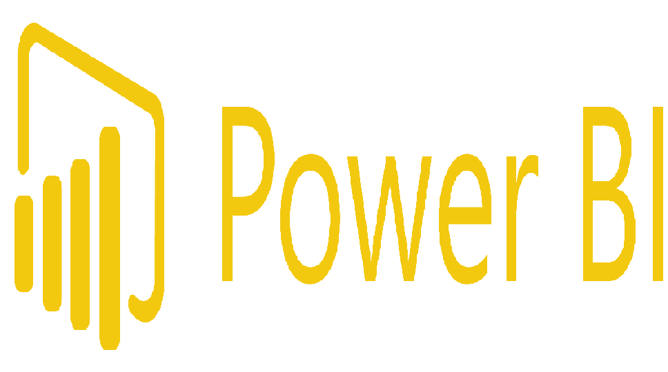

In this project, we used SQL Server as the primary tool for data cleaning and exploratory data analysis of the Covid-19 dataset. Subsequently, data visualization was accomplished using Tableau. Then we visualised the data using Tableau.

In this project we scraped the data related to the latest world cup event using the Twitter API and tweepy library. Then we perform a sentiment analysis with Textblob, nltk and spaCy. Finally we visualize the trending figures and organizations of this event using Seaborn.

This project analyse the data collected from a survey taken from over 600 data professionals worldwide. We used Excel and PowerQuery for transforming and cleaning the data, then PowerBI to create the dashboard for visualization and analysis.
This project aims to transform housing dataset from its raw form into a more suitable and usable form for analysis.
In this project we analysed the Movies dataset with Pandas & Seaborn to determine what influences the gross revenue from movies.